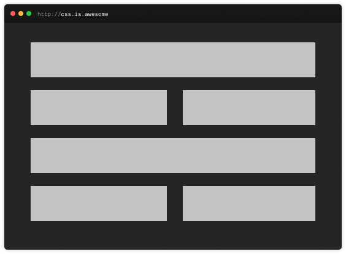
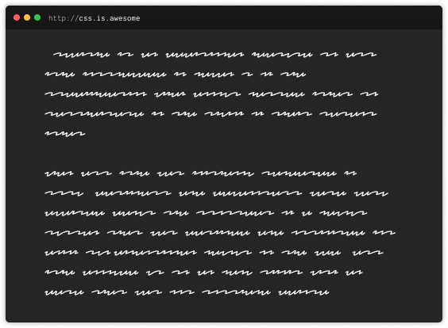
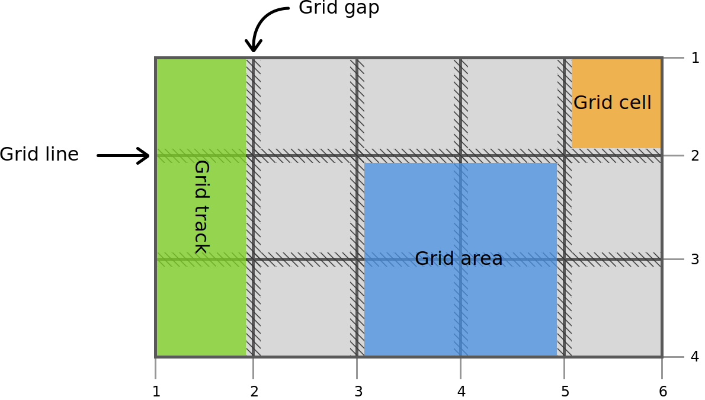
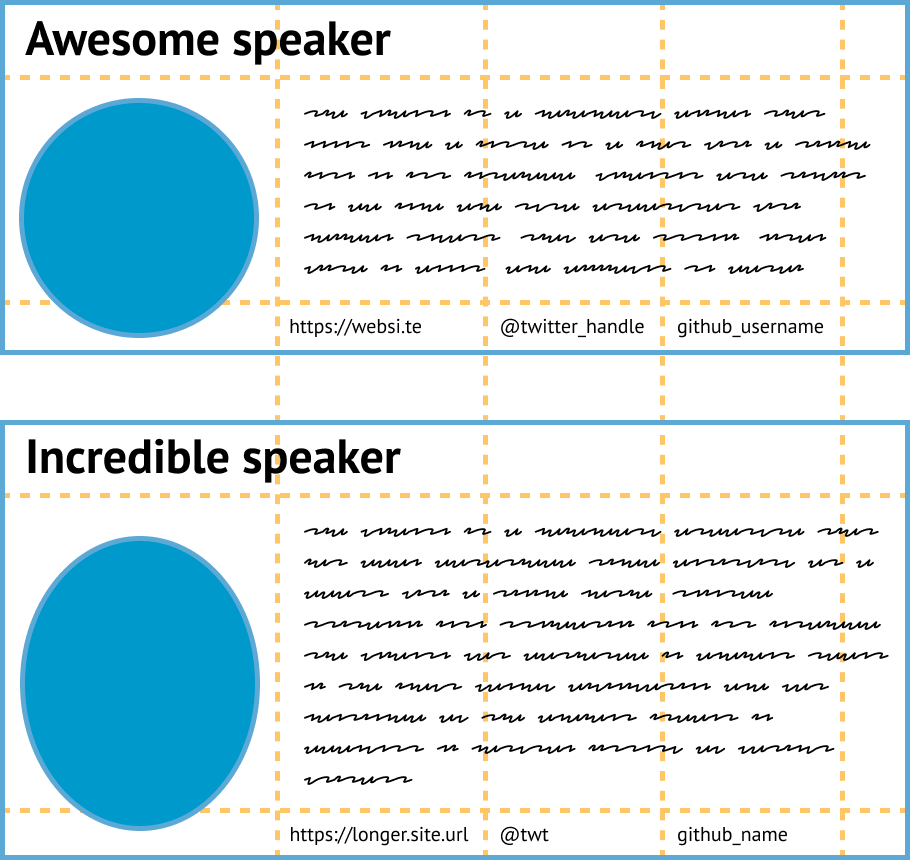
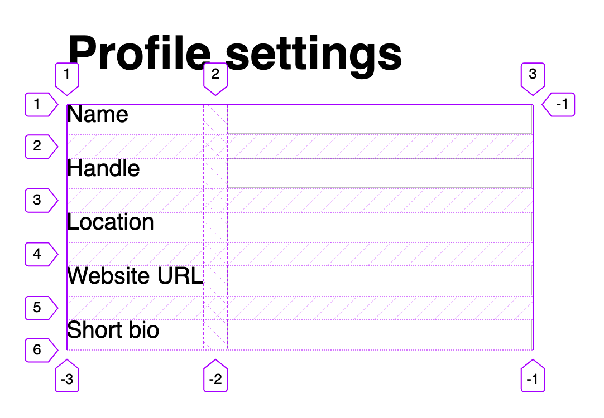
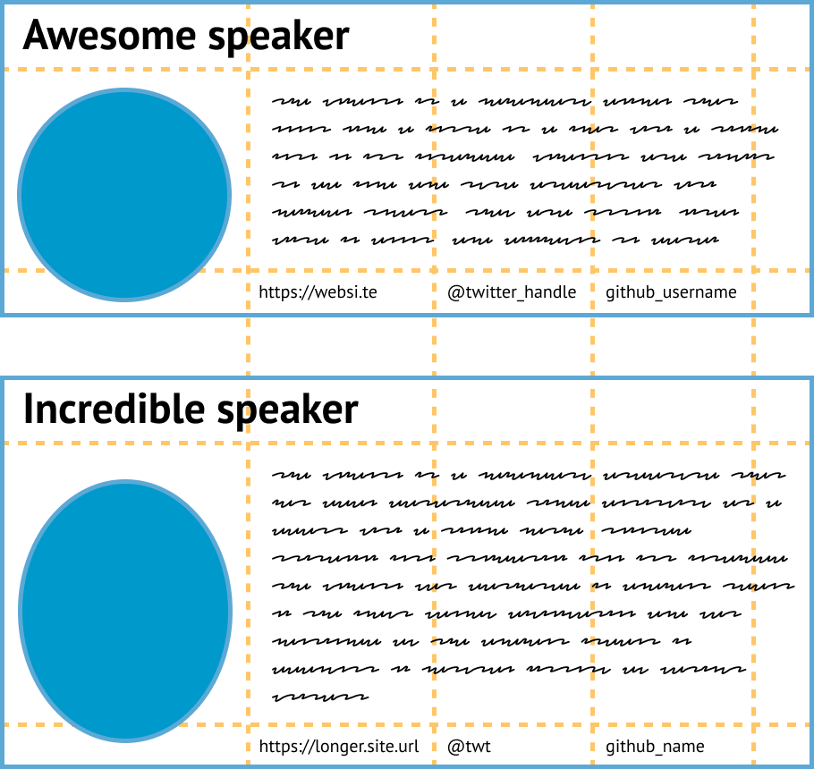
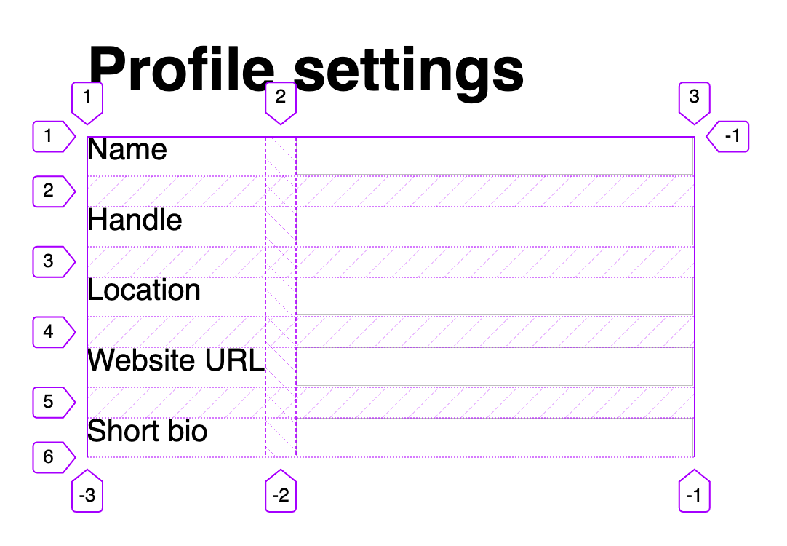

How CSS evolves, a look back at 2 years of CSS grid


🥑 Developer Advocate 🥑

Web layouts over the years
Block layout
designed for laying out documents
Inline layout
designed for laying out text
Table layout
designed for laying out 2D data in a tabular format

Positioned layout
designed for very explicit positioning without much regard for other elements in the document
Flexible box layout
describes a CSS box model optimised for user interface design and designed for laying out more complex applications and webpages
Grid layout
Defines a two-dimensional grid-based layout system,
optimised for user interface design.
Why is CSS grid special?
Grid works from the container in,
other layout methods start with the item
Rachel Andrew
Layout technique: inline-block
Item A
Item B
Item C
Item D
Item E
Item F
Layout technique: float
Item A
Item B
Item C
Item D
Item E
Item F
Layout technique: flex
Item A
Item B
Item C
Item D
Item E
Item F
Grid is the only layout technique that establishes a relationship between rows and columns of grid items.
Grid versus Flexbox?
⚠️ Wrong question ⚠️
Grid AND Flexbox


Flexbox ➡ single dimension


Grid ➡ two dimensions
Where does CSS come from?
- Browser vendors
- Companies who need certain features
- CSS working group
The CSS Working Group
Specification document statuses
Working Draft (WD)
to create a snapshot of the specification's current state and to solicit input from the W3C and the public
Last Call Working Draft (LC or LCWD)
to announce that the specification will move toward Candidate Recommendation unless significant issues are brought up
Candidate Recommendation (CR)
to express that all known issues have been resolved, and is a call for implementations
Proposed Recommendation (PR)
needs a comprehensive test suite and implementation reports proving that every feature is interoperably implemented in at least two shipping implementations
Recommendation (REC)
finally, a standard
It's not a linear process…
…it shouldn’t come as a shock that grid-based layouts have been a goal of CSS since the beginning.
The Story of CSS Grid, from Its Creators by Aaron Gustafson
Fun facts about CSS grid
- Numerous proposals submitted that were never implemented
- First proposal that stuck was one from Microsoft (for Metro UI)
- First implementation of Grid ever was in IE10 (with vendor prefix)
- Bloomberg hired Igalia to implement CSS grid for Blink and WebKit
- Rachel Andrew proposed
gapto solve the gutter problem
Browser support for Grid (Level 1)

Basics of CSS grid
Define your grid.

Place items in the grid.

Grid terminology
Using DevTools to learn Grid
Live examplesWhat's in Grid Level 2?
-
Level 2 expands Grid by:
- adding “subgrid” capabilities for nested grids to participate in the sizing of their parent grids
- aspect-ratio–controlled gutters
Why do we need subgrid?
 



The subgrid syntax
Same properties, more values
grid-template-columns: subgrid <line-name-list>?
grid-template-rows: subgrid <line-name-list>?The subgrid keyword indicates to the browser the nested grid will use the same sizing as its parent along the relevant axis.
.subgrid-container {
grid-columns: 2 / 5; /* placement for the subgrid container itself */
display: grid; /* you must still apply a display: grid to the subgrid */
grid-template-columns: subgrid;
grid-template-rows: subgrid;
}Using DevTools to learn Subgrid
Live examplesBrowser support for subgrid

References
- CSS Flexible Box Layout Module Level 1
- CSS Grid Layout Module Level 1
- CSS Grid Layout Module Level 2
- Codrops reference: Subgrid
- Subgrid on MDN
- Grid Level 2 and Subgrid
- Why display: contents is not CSS Grid Layout subgrid
- CSS Grid Level 2: Here Comes Subgrid
- Grid by Example
- Researching a Property in the CSS Specifications
Thank you!


Font is Red Hat Display by Jeremy Mickel.